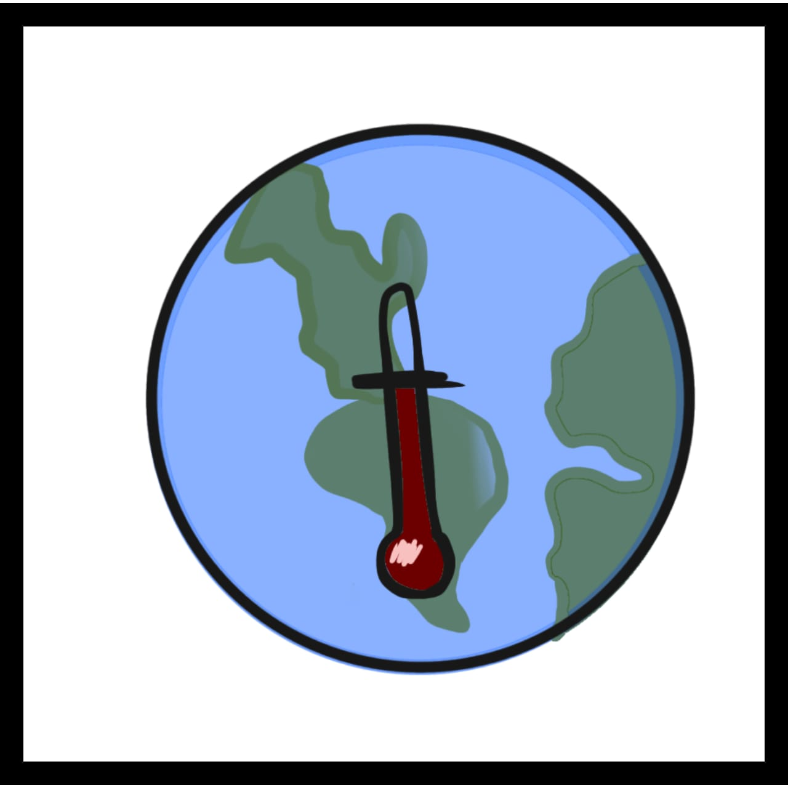

3.Aquecimento global
O efeito estufa é um fonomêno natural, ele ocorre devido a emição de energia solar á superfecie terrestre e oceanos, após a absorção dessa energia solar, ela é liberada novamente ao espaço . Porém, o calor que é transmitido pela superfície fica retido na atmosfera, devido aos gases de efeito estufa. Contudo, se esse gases do efeito estufa serem emitidos exageradamente no ar, eles podem causar um aumento irregular no clima, assim causando o aquecimento global. Além disso, o aquecimento global pode levar ao derretimento das geleiras, o que consequentemente fará com que muitos animais sejam extintos e aumentará o nível da água dos oceanos. A criação de bovinos também pode aumentar esse efeito, devido aos gases soltos após a digestão do pasto.Por conseguinte, para evitarmos isso, é necessário que busquemos utilizar outros meios de locomoção, que não poluam a atmosfera, economização de luz e evitar consumir quantidades exorbitantes de carne.
